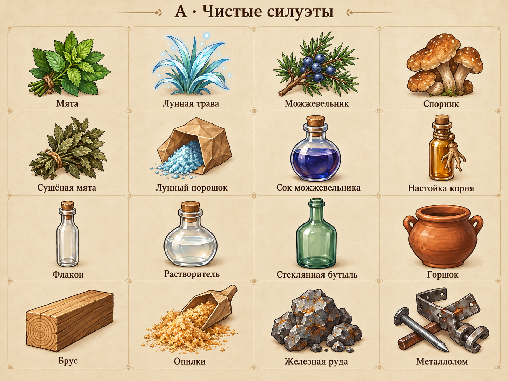
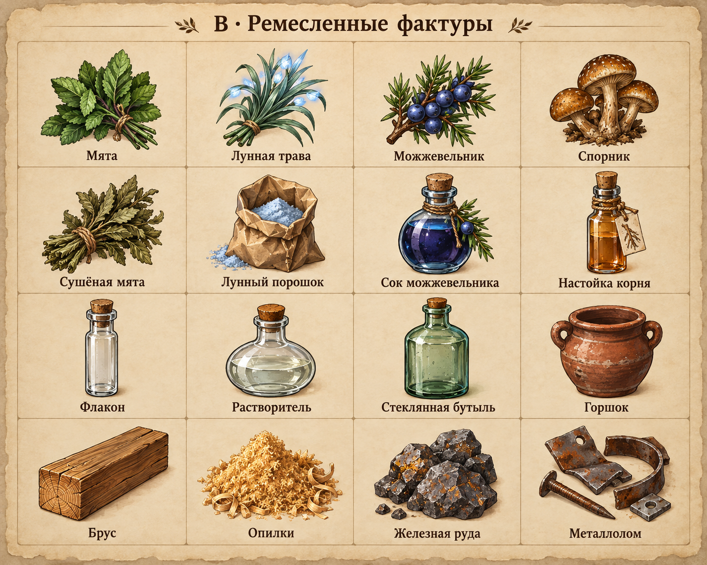
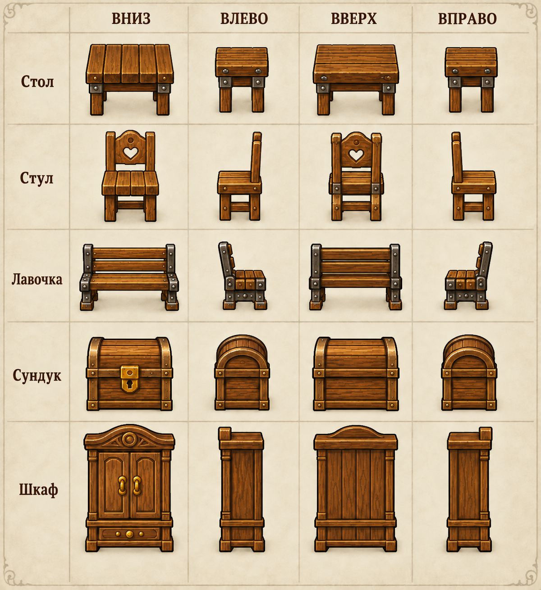
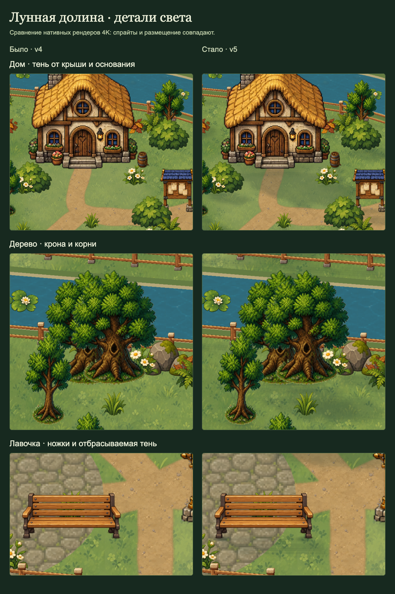
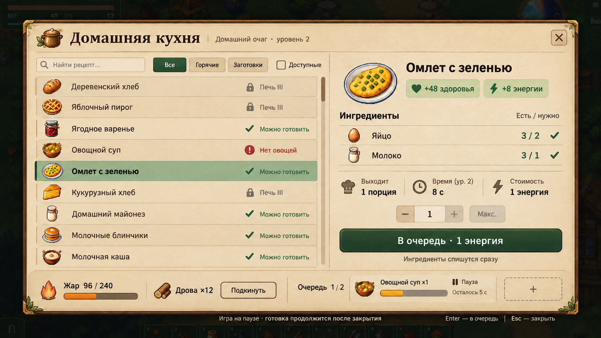

Признак — повод для проверки, а не оценка качества. Художественное решение по каждому предмету можно отметить справа. Это отдельная ревизия; запасы и сохранения игры здесь не меняются.
Два направления для иконок
A — чистые силуэты и крупные смысловые детали. B — больше фактуры, износа и упаковки. На листах одинаковые 16 предметов.


Это листы дизайна. Перед переносом нужны отдельные прозрачные ресурсы, проверка на 32–44 px и выбранный пользователем вариант.
Четыре стороны мебели
Стол, стул, лавочка, сундук и шкаф. Колонки: вниз, влево, вверх, вправо. Общая опора и сопоставимый масштаб; задняя сторона отличается от фасада.

Сиденье, дверцы, замок и рабочая сторона проверяются отдельно. Рисунок не поворачивается плоско вместе с экраном.
Общая система света и окон
Для теней используем уже проработанный образец: отдельный контакт у основания и мягкая проекция силуэта. Ни один фон или новый предмет не должен содержать запечённую дневную тень.

Для мастерских основа — компактный список, отдельные ингредиенты, количество и главное действие рядом. Очередь и топливо появляются у производственных станков; мгновенный крафт сохраняет свой способ работы.

Эти два образца взяты из прежних макетов. Они задают направление дальнейшей адаптации; здесь не показана новая реализация теней или мастерских.
Объём и порядок
- Общий контракт иконки и цвета для игры, Wiki и ревизии; выбранная замена имеет приоритет.
- Техническая ревизия всего реестра, ручное решение по каждому виду и выбор общего художественного направления.
- Свежие травы → сушёное сырьё → соки и порошки → настойки и конечные продукты алхимии.
- Древесина и детали, гончарная цепочка, стекло, руда/топливо/металл, исследовательские расходники.
- Остальные предметы: инструменты, экипировка, еда, материалы и сюжетные вещи — проверка и сохранение хороших рисунков.
- Пять базовых предметов мебели × четыре стороны, затем проверка остальных жёстких объектов.
- Прямые дороги во всех шести районах; доступ ко всем прежним дверям, мостам и переходам.
- Согласованные тени: контакт, падающий силуэт, дневной/вечерний режим, стабильная стоимость отрисовки.
- Общий макет для 18 станков: обычный и очередной крафт, уровни, материалы, нехватка ресурсов и управление.
- Короткие реакции: открытие, фокус, нажатие, добавление в очередь и готовность. Пауза мира включается сразу.
- Проверки интерфейса, прозрачности, направлений, коллизий, языков, сохранений и производительности перед каждой партией.
Подробный план и критерии готовности · Точный состав партий · Исходные измерения